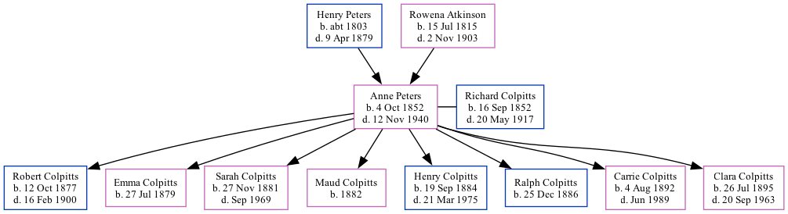

Anne Atkinson Colpitts (née Peters) 1852 - 1940 [ Home ] | [ Calendar ] | [ Surnames Index ] | [ Family History ]The daughter of Henry Peters and Rowena Atkinson Anne Peters , the second cousin three-times-removed on the father's side of Nigel Horne , was born in New Brunswick, Canada on 4 Oct 18521,2,3,4,5,6,7 and married Richard Colpitts (with whom she had 8 children: Robert Noble , Emma Alverda , Sarah Rowena Maude , Maud , Henry Jones , Ralph Watson , Carrie Eliza Ida and Clara Agnes ) in New Brunswick on 21 Nov 1876.
Anne spent all of her life in New Brunswick in Canada. Throughout her life, she lived in several places around the county: in Richibucto, Kent in 18611 ; in Kent, New Brunswick, Canada in 18717 ; in Albert, New Brunswick, Canada in 18812 ; in Elgin in 18918 and in 19014 ; and in Moncton, Westmorland in 1911.
She died on 12 Nov 1940 in New Brunswick6 and was buried in Pleasant Vale, New Brunswick after 12 Nov 19406 .
Parents Henry Warman was born c. 1803Rowena Noble Charlotte was born on 15 Jul 1815Children Robert Noble was born on 12 Oct 1877Emma Alverda was born on 27 Jul 1879Sarah Rowena Maude was born on 27 Nov 1881Maud was born in 1882Henry Jones was born on 19 Sept 1884Ralph Watson was born on 25 Dec 1886Carrie Eliza Ida was born on 4 Aug 1892Clara Agnes was born on 26 Jul 1895Citations 1861 Census of Canada Ancestry.com Operations Inc (Relation to Head of House: Daughter) 1881 Census of Canada Ancestry.com Operations Inc (Marital Status: Married) 1891 Census of Canada Ancestry.com Operations Inc 1901 Census of Canada Ancestry.com Operations Inc (Marital Status: MarriedRelation to Head of House: Wife) Canada Census 1861 - Findmypast Canada, Find A Grave Index, 1600s-Current Ancestry.com Operations, Inc. Kent County, New Brunswick Census, 1871: Eight Subdistricts Ancestry.com Operations Inc Canada Census 1901 - Findmypast (was the wife of the head of the household) Media Collpitts - headstone Canada Census 1911 - CAN/CENSUS/1911/01528102 Family Tree Map
Generated by ged2site . Last updated on Feb 19, 2025